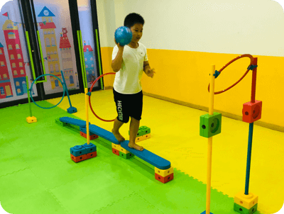
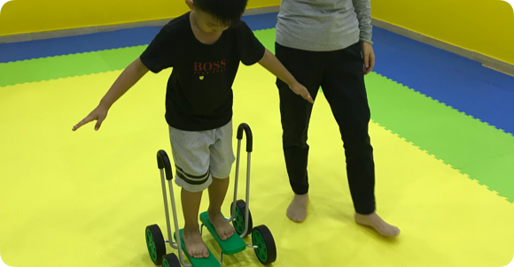
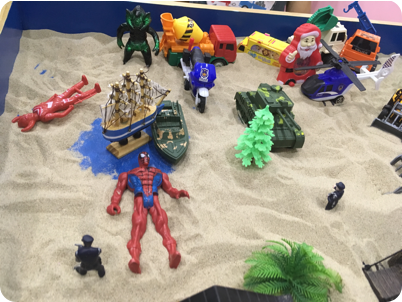
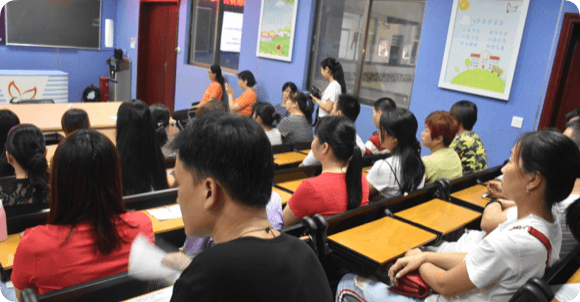
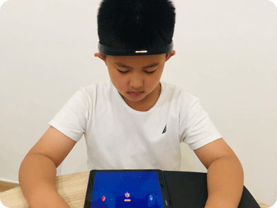

-
01/EC 成长课· 用身体改变大脑
EC成长课以心理学具身认知理论为依据，天翌教育自主研发的课程获得国家知识产权专利。天翌教育老师代表在第二十二届全国心理学学术会议和第十五届心理发展与社会服务学术年会中做学术报告，研究表明EC成长课显着提高学龄儿童的创造力。玩转专注力，就是最大的学习效率
- 部分课程主题：
- 第一期：手指灵活，数学也强- 运动体验如何提升认知能力
- 第二期：能说对，才能听懂- 用身体理解别人
- 第三期：正念5 分钟，专注一整天- 以身体为中心来冷静大脑
- 第四期：被别人拒绝，身体也会疼- 社交温暖的根源
- 第五期：肢体灵活，思维也活跃- 身体记忆是如何激活创造力的
- 第六期：多微笑，心情更愉悦- 身体感觉影响情绪
- 第七期：身体参与协作，头脑更聪明- 身体状态影响记忆
- 第八期：身体形象概念丰富，空间感升级- 以身体为载体感知外部
- 第九期：手眼脑协调，激发最强大脑- 生理一体化
- 第十期：综合训练，揭示体内奥秘- 用身体改变大脑
 -
02/感统训练
感觉统合就如同：十字路口的「红绿灯」一样重要，如果这盏红绿灯正常运作那大脑上的所有感觉信息就能顺畅畅通。
感统训练是将视知觉，听知觉，触觉，本体觉和前庭觉进行一个统合，让大脑会运用这些信息指挥我们的身体，做出适当的动作反应。
- 感统失调的表现：
- 视知觉失调：把6和9，b和d，q和p写反
- 听知觉失调：经常听漏东西，记不住老师说的话等
- 触觉失调：不喜欢与他人有肢体接触，不抚摸沙子
- 本体觉失调：常常撞到东西，无法正确掌握方向
- 前庭觉失调：分不清左右方向，鞋子容易穿反
 -
03/儿童情商
情商并非天生的，而是后天培养出来的。
儿童情商训练过情景模拟，角色扮演，游戏体验的教学方式，让孩子学会倾听与表达，能够理解他人，成为一个善于读懂情绪，学会管理情绪，自信且抗挫折的人。
-
04/沙盘游戏
在线预约沙盘游戏体验课程吧>>沙盘是孩子内心世界的投射。沙盘师守候着孩子的心灵，把那些能量，力量，浪费，恼怒，甚至是那些没有办法的，他不想面对的所有东西都表达出来，促进孩子生理健康发展。诸如：挖掘孩子乱发脾气深层次的原因，改善亲子关系，解决孩子的强迫行为。 -
05/父母课堂
在线与专家一起聊聊如何更好的教育孩子>>中国家庭在对孩子的教育上也是吸收最大的
- 你是否觉得：
- 你付出了这么多，孩子也该给你起码等值的回报？
- 父母课堂致力于解决家庭教育问题，成为智慧父母。
- ①如何建立亲密的亲子关系
- ②如何让孩子爱上学习
- ③如何高效陪伴孩子
 -
06/脑电生物反馈
在线与专家一起聊聊如何更好的教育孩子>>脑电生物反馈是一种将孩子的脑波通过电脑的声音，图像以电子游戏的形式表现出来的方式，是提高孩子专注力的重要仪器。
当孩子注意力不集中，昏昏欲睡的时候，电脑画面就会卡住，赛车就会变慢，名次就会落后，游戏不能顺利进行下去。集中的状态中，这样的反馈练习周而复始，将会引发越来越集中。

天翌教育

/关注官方公众号了解更多权威资讯 /免费课程线上听